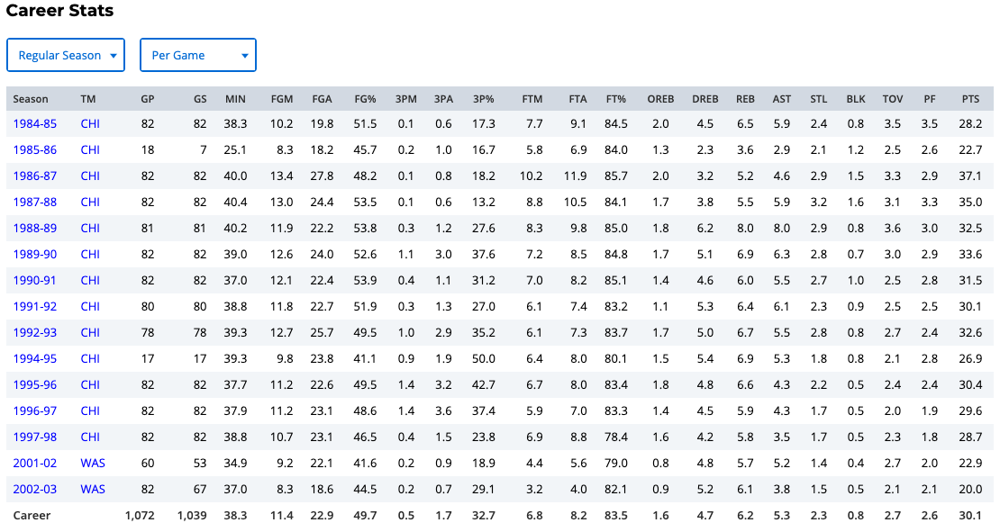
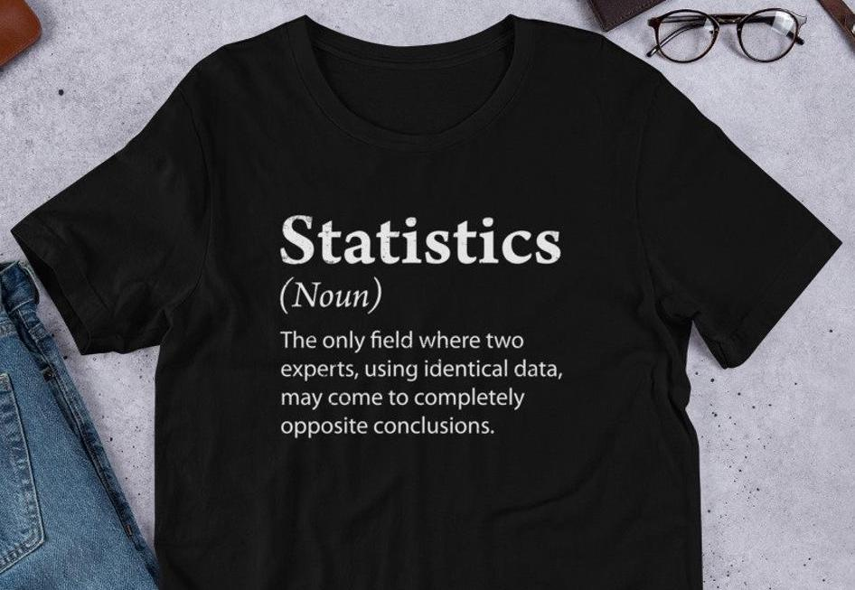
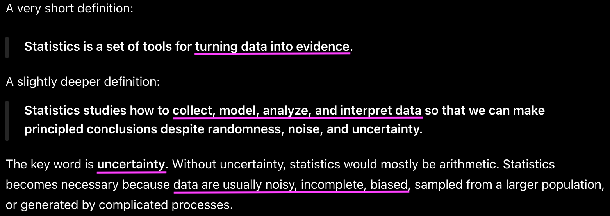
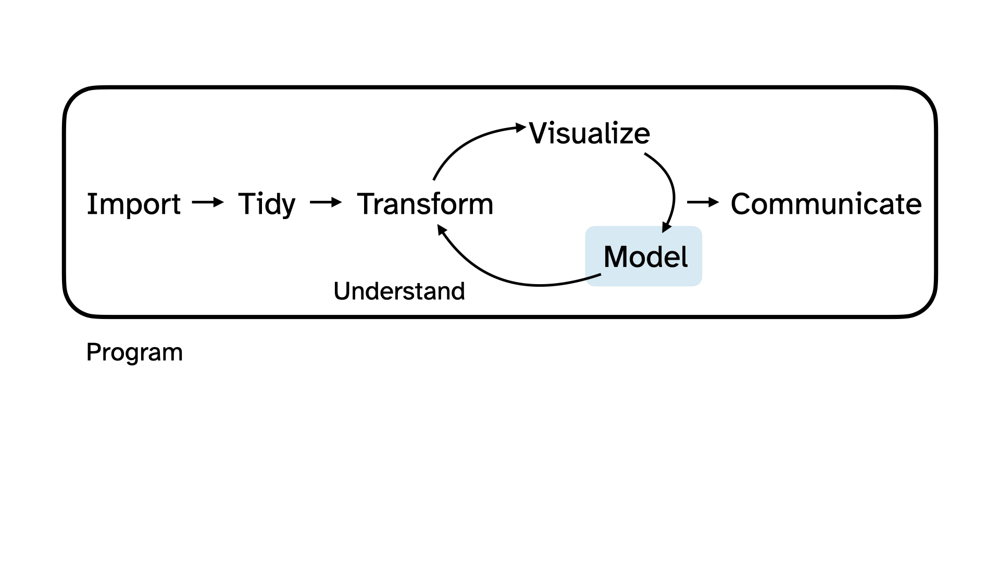
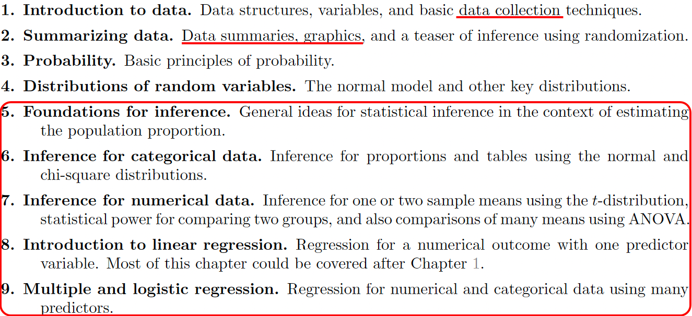
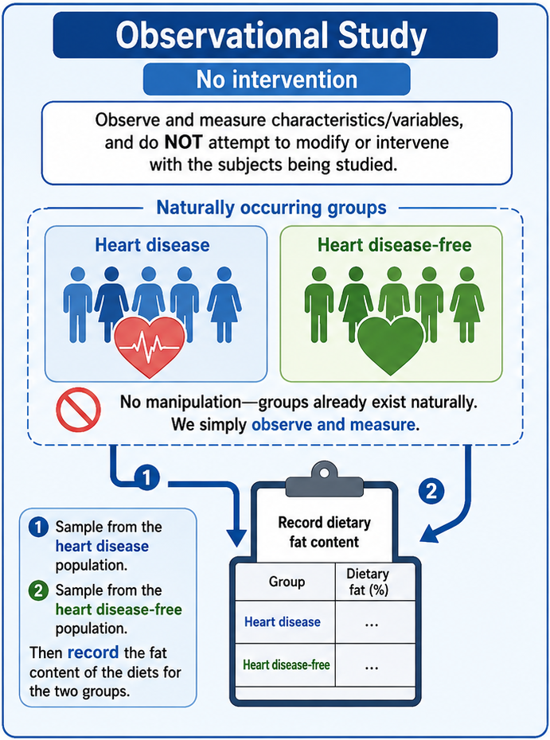
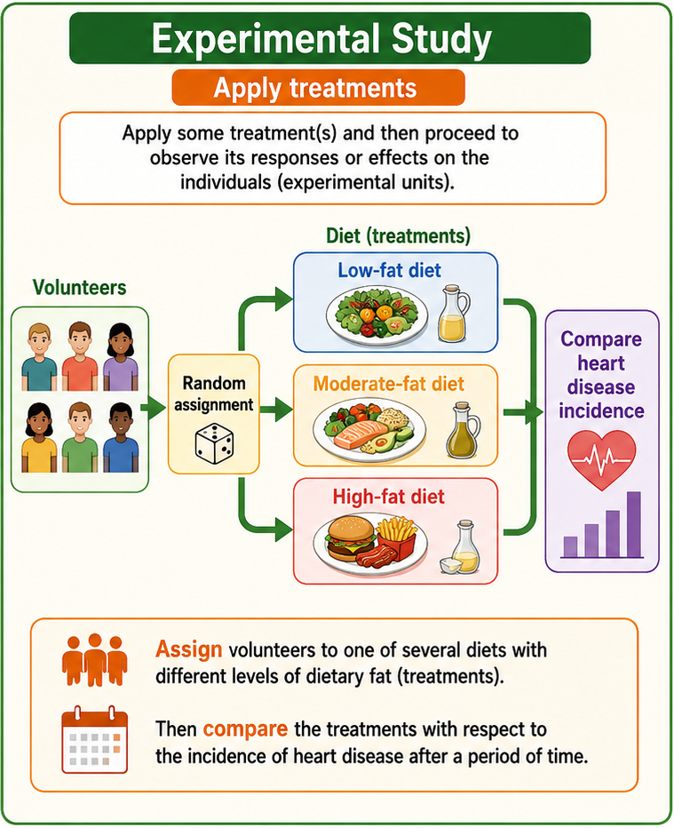
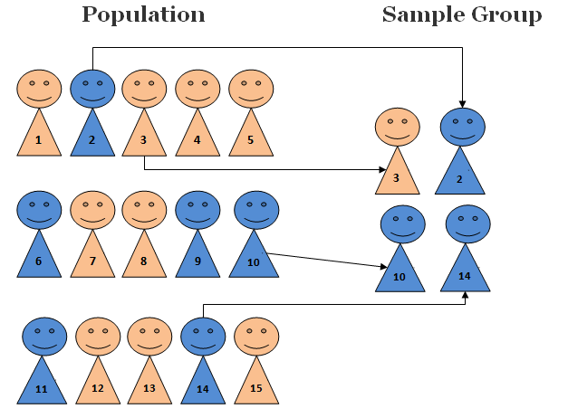
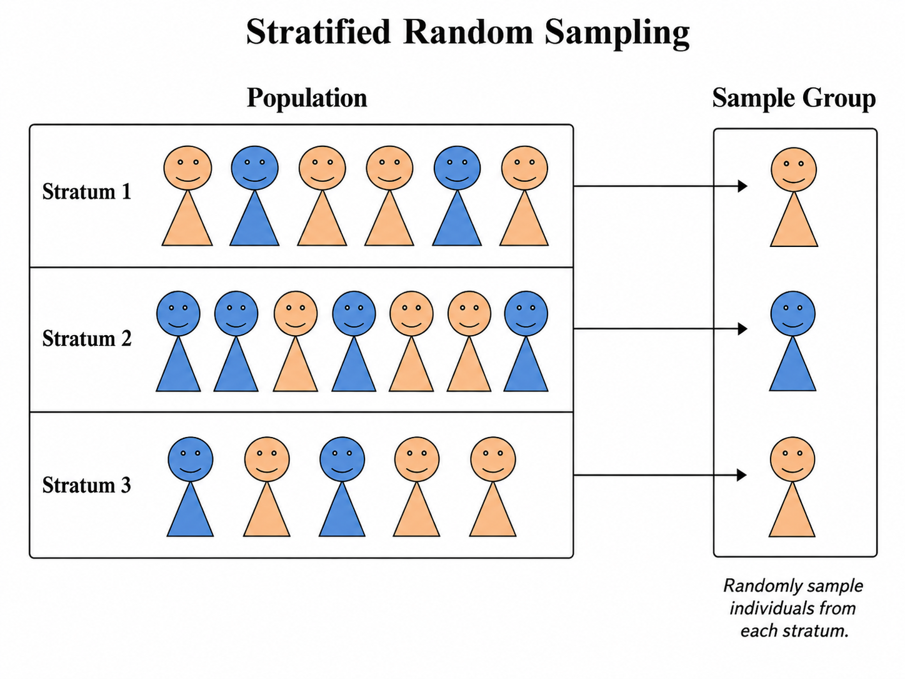
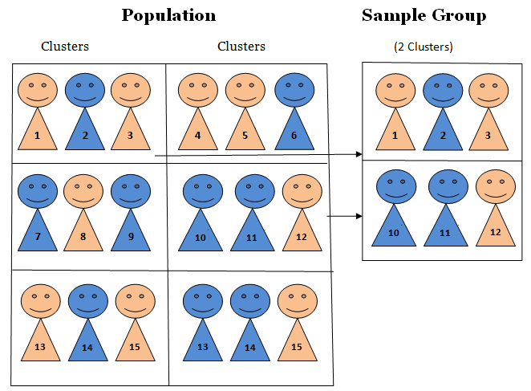

Overview of Statistics and Data 📖
MATH 4720/MSSC 5720 Introduction to Statistics
What is Statisitcs
- Let’s take a short break, and we can start talking about statistics.
- The first and big question we usually ask is What is statistics.
Statistics as Numeric Records
- In ordinary conversations, the word statistics is used as a term to indicate a set or collection of numeric records.
- For example, some NBA star’s career statistics are right here.
- Anyone know who he is? Wanna guess?
Statistics as Numeric Records
- In ordinary conversations, the word statistics is used as a term to indicate a set or collection of numeric records.
- Yes, Michael Jordan! My favorite NBA player.
- You know I was born in 80’s.
- You guys didn’t watch MJ playing, but I did. in TV. OK.
- Your idol may be Kobe, or LBJ or Stephen Curry, but for people born in 80’s, or your parents, most of them would agree MJ is the greatest of all time.
- OK I am gone too far.
- Again, in ordinary conversations, the word statistics represents numeric records.

- And somebody defines statistics as the only field where two experts, using identical data, may come to completely opposite conclusions, which is true in some sense.
- And well see why later in this course.
- With the same data, different statistical methods may produce different results and lead to difference conclusions.
Statistics as a Discipline
- Forget about that useless definition.
- From Wiki, Statistics is formally defined as the discipline that concerns the collection, organization, analysis, interpretation and presentation of data.
. . .
My ChatGPT says

Science of Data
- Statistics is a subject dealing with data, or Science of Data.
- So, Statistics is a Science of Data.
- There might be another science of data. I’m not saying statistics is THE science of data.
. . .
- A science of data using statistical thinking, methods and models.
. . .
🤔 But wait, then what is DATA SCIENCE ❓
Difference between Statistics and Data Science
- When the term Data science just came out around 10 years ago, there is no formal definition of data science.
. . .
My ChatGPT says:
Statistics is foundational to Data Science, but Data Science also includes programming, data engineering, machine learning, and business communication.
Data Science Life Cycle

Data science is an discipline that helps us turn raw data into understanding, insight, and knowledge that includes multiple steps associated with data.
This pipeline is the entrie workflow of data science.
UC Santa Cruz Department of Statistics Courses
STAT 5 – Statistics
STAT 7 – Statistical Methods for the Biological, Environmental, and Health Sciences
STAT 17 – Statistical Methods for Business and Economics
STAT 80A – Gambling and Gaming
STAT 80B – The Art of Data Visualization
STAT 108 – Linear Regression
STAT 131 – Introduction to Probability Theory
STAT 132 – Classical and Bayesian Inference
STAT 202 – Linear Models in SAS
STAT 203 – Introduction to Probability Theory
STAT 204 – Introduction to Statistical Data Analysis
STAT 205 – Introduction to Classical Statistical Learning
STAT 205B – Intermediate Classical Inference
STAT 206 – Applied Bayesian Statistics
STAT 206B – Intermediate Bayesian Inference
STAT 207 – Intermediate Bayesian Statistical Modeling
STAT 208 – Linear Statistical Models
STAT 209 – Generalized Linear Models
STAT 221 – Statistical Machine Learning
STAT 222 – Bayesian Nonparametric Methods
STAT 223 – Time Series Analysis
STAT 224 – Bayesian Survival Analysis and Clinical Design
STAT 225 – Multivariate Statistical Methods
STAT 226 – Spatial Statistics
STAT 227 – Statistical Learning and High-Dimensional Data Analysis
STAT 229 – Advanced Bayesian Computation
STAT 243 – Stochastic Processes
STAT 244 – Bayesian Decision Theory
STAT 246 – Probability Theory with Markov Chains
STAT 266A – Data Visualization and Statistical Programming in R
STAT 266B – Advanced Statistical Programming in R
STAT 266C – Introduction to Data Wrangling
- ️⬛ Methods and models
- 🟩 Other data science related topics
Data Science May Now Be a Broader View of Statistics
Collection, organization, analysis, interpretation and presentation of data.

Although statistics deals with Collection, organization, analysis, interpretation and presentation of data, statistics focus much more on data analysis, methods and models.
And now data science is more like a broader view of statistics.
What We Learn In this Course

- In particular, we will spend most of the time talking about probability and statistical inference methods OK.
We Focus On Statistical Inference
We spend most of time on various statistical methods for analyzing data.
-
Learn useful information
about the population we are interested (e.g. All Marquette students)
from our sample data (e.g. Students in MATH 4720)
through statistical inferential methods, including estimation and testing (e.g. Confidence intervals)

- Don’t worry if you have no idea of these terms.
- These are what we will discuss throughout the course, and I’ll explain each term in detail later in class. OK.
Statistics is a Science of Data, so What is Data?
Data: A set of objects on which we observe or measure one or more characteristics.
Objects are individuals, observations, subjects or cases in statistical studies.
A characteristic or attribute is called a variable because it varies from one to another.
- All right. Statistics is a Science of Data, so What is Data?
- Let’s define Data.
- A data set is a set of objects on which we observe or measure one or more characteristics.
- Objects are individuals, observations, subjects or cases in statistical studies.
- A characteristic or attribute is called a variable because it varies from one to another.
. . .
| Number | Name | Class | Pos | Ht | Wt | Hometown | High_School | PPG | RPG | APG |
|---|---|---|---|---|---|---|---|---|---|---|
| 0 | Nigel James Jr. | So | G | 6’0” | 195 | Huntington, NY | Long island Lutheran School | 16.4 | 3.4 | 4.9 |
| 1 | Nash Walker | Fr | G | 6’6” | 205 | Smithton, Tasmania | NBA Global Academy | NA | NA | NA |
| 4 | Nolan Minessale | Jr | G | 6’5” | 195 | Brookfield, WI | Marquette HS | 19.8 | 4.6 | 4.3 |
| 5 | Colton Crowdis | Fr | G | 6’4” | 180 | Toronto, Ontario | Bridgton Academy | NA | NA | NA |
| 7 | Ian Miletic | Fr | SF | 6’7” | 205 | Arlington Heights, IL | Rolling Meadows HS | NA | NA | NA |
| 8 | Joshua Clark | So | F | 7’1” | 245 | Virginia Beach, VA | Clements HS | 1.3 | 1.9 | 0.0 |
| 9 | Damarius Owens | Jr | SF | 6’7” | 205 | Rochester, NY | Western Reserve Academy | 4.8 | 2.6 | 0.7 |
| 10 | Adrien Stevens | So | G | 6’4” | 215 | Potomac, MD | Bullis School | 7.9 | 2.6 | 1.6 |
| 11 | Sananda Fru | Sr | F | 6’11” | 250 | Berlin, Germany | Loewen Braunschweig | 9.0 | 6.1 | 1.2 |
| 13 | Royce Parham | Jr | F | 6’9” | 230 | Pittsburgh, PA | Western Reserve Academy | 12.5 | 4.9 | 0.9 |
| 18 | Caedin Hamilton | Jr | F | 6’9” | 245 | Santa Maria, CA | St. Joseph | 2.9 | 2.9 | 0.6 |
| 21 | Alex Egbuonu | Fr | SF | 6’7” | 235 | Nashua, NH | Lawrence Academy | NA | NA | NA |
| 33 | Ethan Johnston | Fr | G | 6’7” | 210 | Queens, NY | The Hill School | NA | NA | NA |
| 35 | Michael Phillips II | So | SF | 6’6” | 205 | Rolesville, NC | GRACE Christian School | 2.1 | 1.3 | 0.2 |
| 42 | Braeden Brenn | So | F | 6’8” | 215 | Appleton, WI | St. Mary Catholic HS | 0.7 | 0.0 | 0.0 |
- For example, the data set right here is a set of Marquette mens basketball players.
- So objects are individuals or players in the data.
- And each player has several characteristics or attributes shown in columns associated with him.
- For example, his #, class, position, height, weight, hometown, and high school.
- These characteristics are called variables because they vary form one to another. Clear?
Data Matrix
Each row corresponds to a unique case or observational unit.
Each column represents a characteristic or variable.
This structure allows new cases to be added as rows or new variables as new columns.
| Number | Name | Class | Pos | Ht | Wt | Hometown | High_School | PPG | RPG | APG |
|---|---|---|---|---|---|---|---|---|---|---|
| 0 | Nigel James Jr. | So | G | 6’0” | 195 | Huntington, NY | Long island Lutheran School | 16.4 | 3.4 | 4.9 |
| 1 | Nash Walker | Fr | G | 6’6” | 205 | Smithton, Tasmania | NBA Global Academy | NA | NA | NA |
| 4 | Nolan Minessale | Jr | G | 6’5” | 195 | Brookfield, WI | Marquette HS | 19.8 | 4.6 | 4.3 |
| 5 | Colton Crowdis | Fr | G | 6’4” | 180 | Toronto, Ontario | Bridgton Academy | NA | NA | NA |
| 7 | Ian Miletic | Fr | SF | 6’7” | 205 | Arlington Heights, IL | Rolling Meadows HS | NA | NA | NA |
| 8 | Joshua Clark | So | F | 7’1” | 245 | Virginia Beach, VA | Clements HS | 1.3 | 1.9 | 0.0 |
| 9 | Damarius Owens | Jr | SF | 6’7” | 205 | Rochester, NY | Western Reserve Academy | 4.8 | 2.6 | 0.7 |
| 10 | Adrien Stevens | So | G | 6’4” | 215 | Potomac, MD | Bullis School | 7.9 | 2.6 | 1.6 |
| 11 | Sananda Fru | Sr | F | 6’11” | 250 | Berlin, Germany | Loewen Braunschweig | 9.0 | 6.1 | 1.2 |
| 13 | Royce Parham | Jr | F | 6’9” | 230 | Pittsburgh, PA | Western Reserve Academy | 12.5 | 4.9 | 0.9 |
| 18 | Caedin Hamilton | Jr | F | 6’9” | 245 | Santa Maria, CA | St. Joseph | 2.9 | 2.9 | 0.6 |
| 21 | Alex Egbuonu | Fr | SF | 6’7” | 235 | Nashua, NH | Lawrence Academy | NA | NA | NA |
| 33 | Ethan Johnston | Fr | G | 6’7” | 210 | Queens, NY | The Hill School | NA | NA | NA |
| 35 | Michael Phillips II | So | SF | 6’6” | 205 | Rolesville, NC | GRACE Christian School | 2.1 | 1.3 | 0.2 |
| 42 | Braeden Brenn | So | F | 6’8” | 215 | Appleton, WI | St. Mary Catholic HS | 0.7 | 0.0 | 0.0 |
- And we usually store a data set in a matrix form that has rows and columns.
- Each row corresponds to a unique case or observational unit, or the object.
- Each column represents a characteristic or variable.
- This structure allows new cases to be added as rows or new variables as new columns.
Population and Sample
- All right. Let’s begin to see what population and sample are.
Target Population
The first step in conducting a study is to identify questions to be investigated.
-
A clear research question is helpful in identifying
- what cases should be studied (row)
- what variables are important (column)
Target Population: the collection of all objects which we are interested in studying from.
- What is the average GPA of currently enrolled Marquette students?
- Target Population: The complete collection of data we’d like to make inference about.
- So the population is a set of all objects which we are interested in studying from.
- Because All Marquette undergrads that are currently enrolled is the complete collection of data we’d like to make inference about.
- Each currently enrolled Marquette undergrad is an object.
- Note that students who are not currently enrolled or students that are already graduated are not our interest, and they shouldn’t be a part of target population.
- Can anybody tell me what variable associated with Marquette undergrads is our interest?
- So average GPA is the variable or population property we like to make inference about.
All Marquette students that are currently enrolled.
Target Population
The first step in conducting a study is to identify questions to be investigated.
-
A clear research question is helpful in identifying
- what cases should be studied (row)
- what variables are important (column)
Target Population: the collection of all objects which we are interested in studying from.
- Does a new drug reduce mortality in patients with severe heart disease?

- OK. Another example. If our research question is Does a new drug reduce mortality in patients with severe heart disease? What is our target population?
- A person with severe heart disease represents a case.
- The population includes all patients with severe heart disease.
All people with severe heart disease.
Sample Data
Sometimes, it’s possible to collect data of all cases we are interested.
Most of the time, it is too expensive to collect data for every case in a population.
What about the average GPA of all students in Illinois? the U.S.? the world? 😱 😱 😱

. . .
Sample: A subset of cases selected from a population.
Compute the average GPA of the sample data
Hope sample avg GPA \(\approx\) population avg GPA. 🙏
- So sampling is our solution to it.
- A Sample is A subset of cases selected from a population.
- And the idea is that OK, we are not able to compute the average GPA of a population, but we collect a sample from that population which has way less objects than the population.
- And then we compute the average GPA of the sample data.
- And we hope the sample average GPA can be close to the population average GPA because the population GPA is our main interest, not the sample GPA.
- To have sample average GPA close to population GPA, we want the sample to look like the population so that the sample and the population share similar attribute including GPA.
Good Sample vs. Bad Sample
Is this 4720/5720 class a sample data of the target population Marquette students?
. . .
Is this 4720/5720 class a “good” sample of the target population?
. . .

Good Sample vs. Bad Sample
Is this 4720/5720 class a “good” sample of the target population?
The sample is convenient to be collected, but it may NOT be representative of the population.
Biased sample: The average GPA of the class may be far from that of all Marquette undergrads.

- The sample is convenient to be collected, but it is NOT well representative of the population.
- You are mostly STEM majors, and so with a high chance, your avg GPA is not the same as the GPA of humanities or business students,right.
- Biased sample: The average GPA of you guys may not be close to the average GPA of all Marquette undergrads.
- Sample data must be collected in an appropriate way. If not GIGO.

How and Why a Representative Sample?
We always seek to randomly select a sample from a population.
Lots of statistical methods are based on randomness assumption.

- We always seek to randomly select a sample from a population because random sampling usually give us a Representative Sample, as long as the sample size, or the number of objects in the sample is not too small.
- So in the example, the proportion of major in our sample should look pretty similar to the proportion of our target population, which is all marquette students.
- If data are not collected in a random framework, these statistical methods – the estimates and errors associated with the estimates – are not reliable.
Data Collection
Two Types of Studies to Collect Sample Data


Two Types of Studies to Collect Sample Data
Observational or Experimental?
Randomly select 40 males and 40 females to see the difference in blood pressure levels between male and female.
Test the effects of a new drug by randomly dividing patients into 3 groups (high dosage, low dosage, placebo).
Limitation of Observational Studies: Confounding
- Confounder: A variable NOT included in a study but affects the variables in the study.
- Observe past data show that increases in ice cream sales are associated with increases in drownings, and we conclude that eating ice cream causes drownings. 😱 😕 ⁉️

. . .
What is the confounder that is not in the data, but affects ice cream sales and the number of drownings?
. . .
Temperature: as temperature increases, ice cream sales increase and the number of drownings goes up because more people swim.
As temperature increases (season), ice cream sales increase and the number of drownings goes up because more people swim.
Causal Relationship
Making causal conclusions based on experiments is often more reasonable than making the same causal conclusions based on observational data.
Observational studies are generally only sufficient to show associations, not causality.

Sampling Methods
Simple Random Sample
Random Sample: Each member of a population is equally likely to be selected.
Simple Random Sample (SRS): Every possible sample of sample size \(n\) has the same chance to be chosen.
Example: If sample 100 students from all, say 10,000 Marquette students, I would randomly assign each student a number (from 1 to 10,000), then randomly select 100 numbers.


Stratified Random Sample
Stratified Sampling: Subdivide the population into different subgroups (strata) that share the same characteristics, then draw a simple random sample from each subgroup.
Homogeneous within strata; Non-homogeneous between strata

Stratified Random Sample Example
- Example: Divide Marquette students into groups by colleges, then SRS for each group.

Cluster Sampling
Cluster Sampling: Divide the population into clusters, then randomly select some of those clusters, and then choose all the members from those selected clusters.
Homogeneous between clusters; Non-homogeneous within clusters

Cluster Sampling Example
- Example: Study 4720 student drinking habit by dividing the students into 9 groups, then randomly selecting 3 and interviewing all of the students in each of those clusters.

- clusters look similar each other, but members in a cluster are not very alike. They have different characteristics.
- Homogeneous between clusters because all classes are STEM classes.
- Non-homogeneous within clusters because students in the same class may have different majors or from different colleges
Data Type
- OK. We learn data collection and sampling methods.
- Now’s let’s learn some data types.

- This diagram tell us everything.
- We are going to learn each data type.
Categorical vs. Numerical Variables
-
A categorical variable provides non-numerical information which can be placed in one (and only one) category from two or more categories.
- Gender (Male 👨, Female 👩, Trans 🏳️🌈)
- Class (Freshman, Sophomore, Junior, Senior, Graduate)
- Country (USA 🇺🇸, Canada 🇨🇦, UK 🇬🇧, Germany 🇩🇪, Japan 🇯🇵, Korea 🇰🇷)
. . .
-
A numerical variable is recorded in a numerical value representing counts or measurements.
- GPA
- The number of relationships you’ve had
- Height
Numerical Variables can be Discrete or Continuous
A discrete variable takes on values of a finite or countable number.
-
A continuous variable takes on values anywhere over a particular range without gaps or jumps.
- GPA is continuous because it can be any value between 0 and 4.
- The number of relationships you’ve had is discrete because you can count the number and it is finite.
- Height is continuous because it can be any number within a range.
Categorical Variables are Usually Recorded as Numbers
- Gender (Male = 0, Female = 1, Trans = 2)
- Class (Freshman = 1, Sophomore = 2, Junior = 3, Senior = 4, Graduate = 5)
- Country (USA = 100, Canada = 101, UK = 200, Germany = 201, Japan = 300, Korea = 301)
- United Airlines boarding groups
. . .
-
The numbers represent categories only; differences between them are meaningless.
- Canada - USA = 101 - 100 = 1?
- Graduate - Sophomore = 5 - 2 = 3 = Junior?
- We need to learn the level of measurements to know whether or which arithmetic operations are meaningful.
Levels of Measurements: Nominal and Ordinal for Categorical Variables
-
Nominal: The data can NOT be ordered in a meaningful or natural way.
- Gender (Male = 0, Female = 1, Trans = 2) is nominal because Male, Female and Trans cannot be ordered.
- Country (USA = 100, Canada = 101, UK = 200, Germany = 201, Japan = 300, Korea = 301) is nominal.
. . .
-
Ordinal: The data can be arranged in some meaningful order, but differences between data values can NOT be determined or are meaningless.
- Class (Freshman = 1, Sophomore = 2, Junior = 3, Senior = 4, Graduate = 5) is ordinal because Sophomore is one class higher than Freshman.
Levels of Measurements: Interval and Ratio for Numerical Variables
-
Interval: The data have meaningful difference between any two values. But the data do NOT have a natural zero or starting point. The data can do \(\color{red} +\) and \(\color{red} -\), but can’t reasonably do \(\color{red} \times\) and \(\color{red} \div\).
- Temperature is interval because \(80^{\circ}\)F is 40 degrees higher than \(40^{\circ}\)F \((80-40=40)\), but \(0^{\circ}\) does not mean NO heat and \(80^{\circ}\)F is NOT twice as hot as \(40^{\circ}\)F.
. . .
-
Ratio: The data have both meaningful differences and ratios, and there is a natural zero starting point that indicates none of the quantity. The data can do \(\color{red} +\), \(\color{red} -\), \(\color{red} \times\) and \(\color{red} \div\).
- Distance is ratio because \(80\) miles is twice as far as \(40\) miles \((80/40 = 2)\), and \(0\) mile means no distance.
Converting Numerical to Categorical
- You’ve already seen an example.
. . .
| Grade | Percentage |
|---|---|
| A | [94, 100] |
| A- | [90, 94) |
| B+ | [87, 90) |
| B | [83, 87) |
| B- | [80, 83) |
| C+ | [77, 80) |
| C | [73, 77) |
| C- | [70, 73) |
| D+ | [65, 70) |
| D | [60, 65) |
| F | [0, 60) |

Identify data type of each variable in the 2026-27 Marquette men’s basketball player data
| Number | Name | Class | Pos | Ht | Wt | Hometown | High_School | PPG | RPG | APG |
|---|---|---|---|---|---|---|---|---|---|---|
| 0 | Nigel James Jr. | So | G | 6’0” | 195 | Huntington, NY | Long island Lutheran School | 16.4 | 3.4 | 4.9 |
| 1 | Nash Walker | Fr | G | 6’6” | 205 | Smithton, Tasmania | NBA Global Academy | NA | NA | NA |
| 4 | Nolan Minessale | Jr | G | 6’5” | 195 | Brookfield, WI | Marquette HS | 19.8 | 4.6 | 4.3 |
| 5 | Colton Crowdis | Fr | G | 6’4” | 180 | Toronto, Ontario | Bridgton Academy | NA | NA | NA |
| 7 | Ian Miletic | Fr | SF | 6’7” | 205 | Arlington Heights, IL | Rolling Meadows HS | NA | NA | NA |
| 8 | Joshua Clark | So | F | 7’1” | 245 | Virginia Beach, VA | Clements HS | 1.3 | 1.9 | 0.0 |
| 9 | Damarius Owens | Jr | SF | 6’7” | 205 | Rochester, NY | Western Reserve Academy | 4.8 | 2.6 | 0.7 |
| 10 | Adrien Stevens | So | G | 6’4” | 215 | Potomac, MD | Bullis School | 7.9 | 2.6 | 1.6 |
| 11 | Sananda Fru | Sr | F | 6’11” | 250 | Berlin, Germany | Loewen Braunschweig | 9.0 | 6.1 | 1.2 |
| 13 | Royce Parham | Jr | F | 6’9” | 230 | Pittsburgh, PA | Western Reserve Academy | 12.5 | 4.9 | 0.9 |
| 18 | Caedin Hamilton | Jr | F | 6’9” | 245 | Santa Maria, CA | St. Joseph | 2.9 | 2.9 | 0.6 |
| 21 | Alex Egbuonu | Fr | SF | 6’7” | 235 | Nashua, NH | Lawrence Academy | NA | NA | NA |
| 33 | Ethan Johnston | Fr | G | 6’7” | 210 | Queens, NY | The Hill School | NA | NA | NA |
| 35 | Michael Phillips II | So | SF | 6’6” | 205 | Rolesville, NC | GRACE Christian School | 2.1 | 1.3 | 0.2 |
| 42 | Braeden Brenn | So | F | 6’8” | 215 | Appleton, WI | St. Mary Catholic HS | 0.7 | 0.0 | 0.0 |